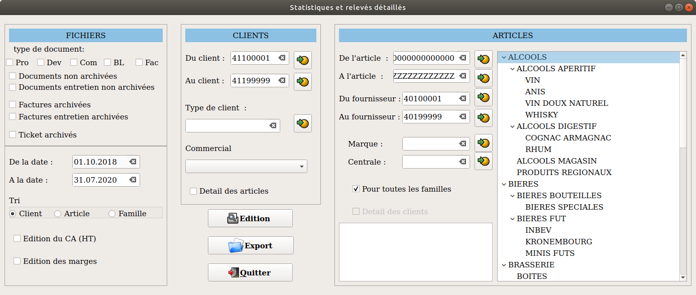

STATISTIQUES ET RELEVÉS DÉTAILLÉS

Les types de documents pro formats, devis, commandes ne peuvent être associés qu'avec des documents non archivés, les BL et factures avec tout documents.
La sélection des tickets archivés désélectionne toutes les autres options.
Lorsque on tri par client on peut soit avoir le détail des articles par client soit juste le total par client.
Lorsque on tri par article on peut avoir le détail des clients par
article soit le total par article.